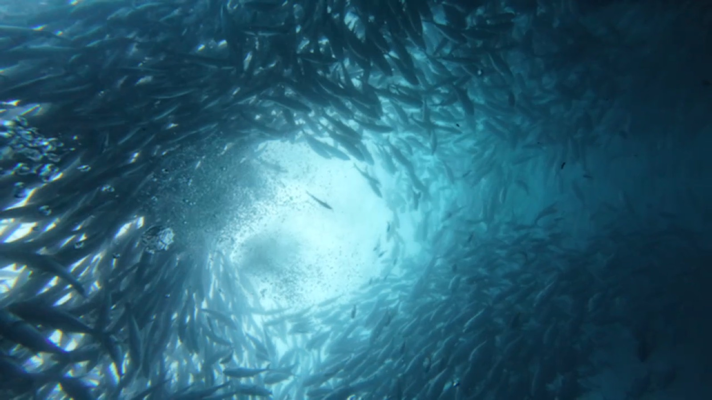

Plankton and big schools
More plankton in the water, so visibility at Sail Rock is closer to 5–10 m. That plankton feeds the big schools of fish, and the whale sharks come in behind them. Koh Ma and Little Sail Rock are at their clearest.

The short answer
Koh Phangan sits on the Gulf of Thailand side of the country, so its seasons are different from Phuket and the Andaman Sea. There is no long closed season here: we go out every month, and the only real break is the monsoon at the end of the year.
Month by month
More plankton in the water, so visibility at Sail Rock is closer to 5–10 m. That plankton feeds the big schools of fish, and the whale sharks come in behind them. Koh Ma and Little Sail Rock are at their clearest.
The textbook months for whale sharks, while the water starts to clear. Koh Ma and Little Sail Rock are still at their best, which makes this a great time for courses too.
Sail Rock at its clearest, often 20–30 m of visibility. Whale sharks are rarer, but September has given us some of our best encounters.
Rough seas on some days. When the sea is unsafe the boat stays in, and you get a full refund. On calm days we still dive.
Learning to dive
The first day of the Open Water course is in the shallow water of Chaloklum Bay, right in front of the shop, so it does not depend much on the season. For the open-water dives we choose between Sail Rock and the calmer Koh Ma depending on the conditions and on how the group feels.
Our advice
The sea changes from day to day, and so does what turns up at Sail Rock. Two or three days in the water give you a much better chance of the conditions, or the whale shark, you came for.
And ask us before you book. Send us your dates on WhatsApp and we will tell you honestly how the water has been lately. You can read more in our Sail Rock guide and our whale shark guide.
Questions
Almost. We dive every month of the year. During the monsoon, roughly November to mid-December, the boat stays in on days when the sea is unsafe, and you get a full refund.
From May to October, often 20 to 30 metres. From January to April there is more plankton in the water and visibility is closer to 5 to 10 metres, but that plankton is what brings the big schools of fish and the whale sharks.
April to June is the textbook season, and we have also had great encounters in February and September. A sighting is never guaranteed.
Any month outside the monsoon. The first day of the Open Water course is in the shallow water of Chaloklum Bay, and we choose between Sail Rock and the calmer Koh Ma for the open-water dives depending on the conditions.
Tell us when you are coming and what you would like to see. We will tell you honestly what to expect.